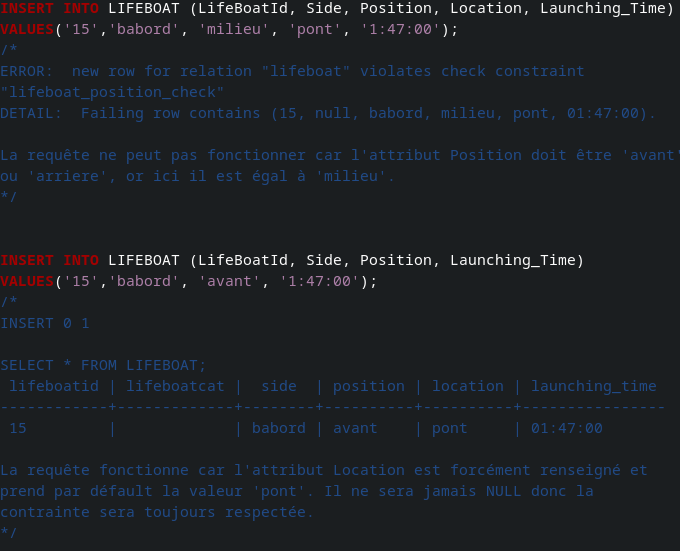

PROBLEMATIQUE PRINCIPALE : Facteurs ayant influencé la survie d'un passager
Cette SAE s'est déroulée en 3 étapes. Nous devions modéliser, puis implémenter une base de données et la remplir avec des données que nous nous avions mises à disposition. Nous avions pour objectif d’interroger cette base de données avec des requêtes SQL pour répondre à la problématique.
DONNEES ET SOURCES A DISPOSITION
- Webographie (non restrictive) pour nous immerger dans le contexte de l’étude
- Fichier dont les onglets rassemblent respectivement des informations sur les passagers, les domestiques de certains passagers et les embarcations de sauvetage équipant le paquebot
Mon travail
Première étape :
Rendus attendus pour le 12 décembre 2023 :
Un document (LibreOfficeWriter enregistré en pdf) contenant :
- Une présentation synthétique de l'organisation du sauvetage et la justification de l'impossibilité logistique d'envisager de sauver davantage de passagers (au moins 1 page)
- Le SEA documenté modélisant les données fournies
- Un ensemble de règles de gestion organisées (RG)
- Conclusion exprimant en quoi une BD dont le schéma serait dérivé de ce SEA permettrait de répondre à la problématique.
On a comméncé par découvrir la base de données et faire des recherches sur le Titanic chacune de notre côté en se servant de la webographie, tout en complétant par nos propres recherches, sur d’autres sites.
Ma collègue Léa s’est occupée d’écrire le compte-rendu sur l’histoire du Titanic à partir de ces recherches mises en commun et de mettre en page le document final. On a décidé des règles de gestion ensemble pour éviter tout malentendu dans la suite du projet. Pour ma part je me suis chargée de réaliser le SEA ci-contre à l’aide d’un logiciel. J’ai également justifier mes choix de modélisation dans le document final (ensuite relus et complétés par ma collègue).
SEAJustifications
Deuxième étape :
Rendus attendus pour le 21 décembre 2023 :
Un document pdf : schéma du modèle relationnel dérivé de la correction du SEA
- Fichier sql du script de création de la BD
- Fichier sql du script de suppression de la BD
- Fichier sql du script testconfo_login.sql
- Fichier sql du script de testinfo_Login.sql
La seconde étape consistait à réaliser la base de données en fonction du SEA et la remplir avec le fichier de données fourni.
Ma collègue s’est beaucoup occupée de la justification du SEA et du fichier testinfo.sql, tandis que j’ai créé la table et son fichier de suppression. Ensuite, j’ai écrit et commenté 38 tests permettant de vérifier que toutes les contraintes concernant les tables fonctionnaient correctement. Cette fois encore, ma collègue a fait la mise en page du document. Voici quelques extraits de code :
Extrait de la création de la tableFichier de suppressionExtrait de tests

Extrait de tests
Troisième étape :
Rendus attenudus pour le 11 janvier 2024 :
- Un document pdf des requêtes imposées
- Fichier sql (code et résultat) et des requêtes complémentaires qui nous semble pertinentes
- Notre bilan global de la SAE
Cette étape était la dernière de la SAE on a donc du faire les requêtes imposées dans les consignes, plus quelques autres pour pouvoir répondre à la problématique et trouver les facteurs ayant influencé la survie d'un passager.
Pour cette partie, nous nous sommes réparti les requêtes à réaliser et à commenter (celles-ci étaient déjà réparties en 3 parties, on a donc chacune fait une partie et demi). Je me suis chargée de la mise en page et de rédiger la conclusion. Voici un extrait du code et notre conclusion :
Exemple de requête 1Exemple de requête 2Conclusion